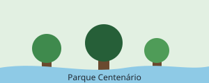

Festival de Música ao Ar Livre
Apresentações gratuitas de bandas locais no palco principal do parque.
- Data: sábado, 20 de setembro
- Horário: 15h às 21h
- Entrada gratuita
Guia de Locais e Eventos de Mogi das Cruzes
O Parque Centenário é um dos principais espaços públicos de Mogi das Cruzes, com áreas verdes, pista de caminhada e programação cultural gratuita aos fins de semana.
É o lugar onde a cidade respira aos domingos.
| Item | Detalhe | Observação |
|---|---|---|
| Funcionamento | Todos os dias | 6h às 20h |
| Entrada | Gratuita | Acesso livre |
| Avaliação média | 4,6 de 5 | 1.240 avaliações |
| Atualizado em setembro de 2026 | ||
Apresentações gratuitas de bandas locais no palco principal do parque.
Links úteis para planejar sua visita:
